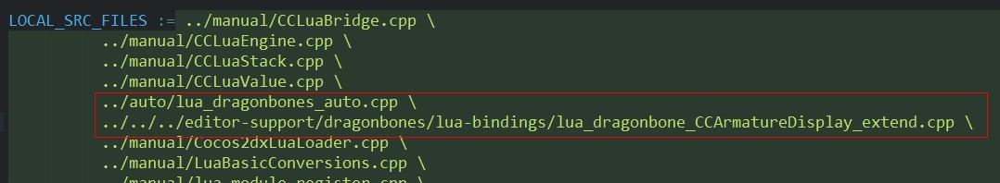
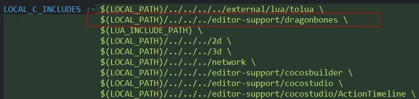

Dragonbones 是一款老牌 2D 骨骼动画系统，早期版本在 Flash 上编辑，现在已经拥有了自己独立的编辑器，功能越来越强大，加上现在有了正经的组织，更新也变的频繁有规划了，很有前途的项目，最关键是开源啊。这篇文章主要讲怎么将 Dragonbones 集成到 cocos2dx 上使用，还有绑定到 Lua 上。
系统：Windows10
IDE：Visual studio 2015
Cocos2dx：cocos2d-x-3.13.1
这是我的环境，如果你的环境和我的相差太大的话，不保证一切顺利……
源码
可以选择下载官方原版，也可以选择下载我整理好的版本，我的版本集成了 Lua 部分，原版只支持 C++。如果你是第一次，又打算跟着这篇文章做的话，最好下载我的版本…… :p，如果下的是官方版本，很多步骤是不通用的。
我的版本：https://github.com/TshineZheng/Dragonbones-Cocos2dx
官方版本：https://github.com/DragonBones/DragonBonesCPP
导入源码
首先创建 cocos2dx 项目，这里创建的是 lua 类型的项目，将下载下来的源码复制到创建好的项目根目录下，直接覆盖。用 VS2015 打开创建好的 cocos2dx 项目路径在
frameworks\runtime-src\proj.win32\xxx.sln
添加 libdragonbones 库
右击解决方案 => 添加 => 现有项目… 选择 libdragonbones项目文件，路径在
frameworks\cocos2d-x\cocos\editor-support\dragonbones\renderer\cocos2d-x-3.x\proj.win32\libDragonbones.vcxproj
添加依赖项
右键Game项目 => 生成依赖项 => 项目依赖项…，勾选 libDragonbones。 右键Game项目 => 添加 => 引用 => 勾选 libDragonbones。 到这里 C艹 部分已经完成了，如果你只是使用 C艹，可以跳过 Lua 部分。
注册 Lua 绑定函数
编辑默认的 AppDelegate.cpp ，在 applicationDidFinishLaunching 方法中添加 Lua 注册函数，如下
1 | bool AppDelegate::applicationDidFinishLaunching() |
注意关键行，其中 register\_all\_dragonbones 和 register\_dragonbone\_CCArmatureDisplay_extend 就是注册函数。
接着编译运行吧，不出意外的话，就可以看到一个通过 lua 运行的 Demo 程序了，一共包含 5 个 Demo ，你可以通过修改 /src/main.lua 里的代码启动另外几个 Demo 。
编译Android
编辑 frameworks\\runtime-src\\proj.android\\jni\\Android.mk ，修改如下，注意 19 和 27 行
1 | LOCAL_PATH := $(call my-dir) |
到这里，如果只是 C艹 的话，就可以直接编译了。 保存，接着打开
frameworks\cocos2d-x\cocos\scripting\lua-bindings\proj.android\Android.mk
在 LOCAL_SRC_FILES 中添加注册 Lua 函数所在的文件

在 LOCAL_C_INCLUDES 中添加编译时需要用到的目录

以上就是所有步骤了，到项目根目录下运行编译命令编译吧。 另外说一下，在我修改的版本中，已经导出的 Lua API 可以满足目前官方的 5 个 Demo 运行，但并不是所有 API 都导出了。虽然可以满足绝大部分需求，还是建议你在你正式开始前最好先了解下怎么绑定 API。 感谢阅读！